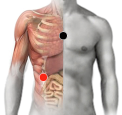

Escherichia Coli
timo - hígado
aquiles- aquiles
cápsula renal - vesícula
ombligo - hígado
pancreas - riñón (d)
esternón - suprarrenales
dorsal 5 - dorsal 5
lumbar 5 - lumbar 5
vagina - riñón

Generalidades:
Es muy común que se encuentre en el tracto intestinal de los humanos sin causar patología. Puede causar diarreas, nauseas, vómitos, fuertes dolores abdominales, fatiga, fiebre. Muy frecuente en diabéticos, causa la Hepatitis L.
En algunos casos puede generar infecciones del tracto urinario o alterar el sistema nervioso. También puede causar el síndrome hemolítico urémico.
Transmisión:
Se trasmite por alimentos contaminados. Cocer bien los alimentos. Medidas de higiene como lavarse bien las manos, lavar y desinfectar los alimentos.
Se puede llegar a transmitir de madre a hijo en el momento del parto